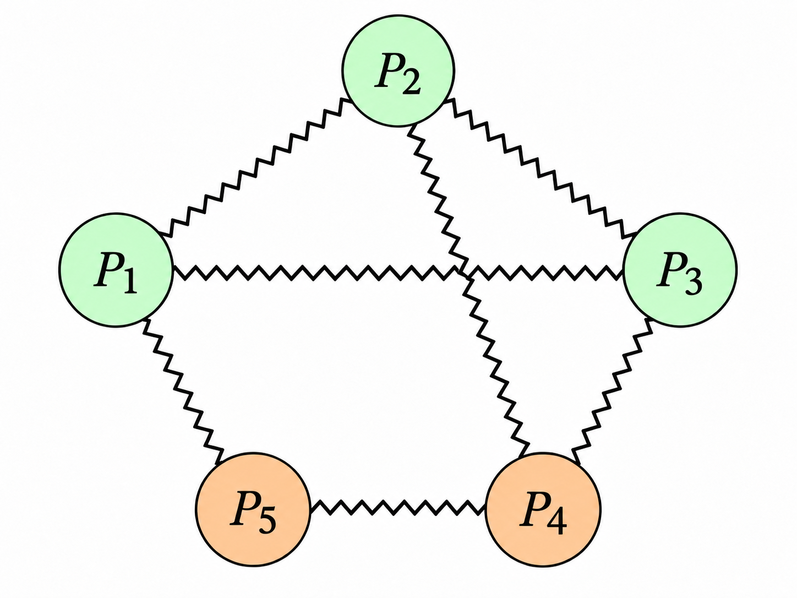
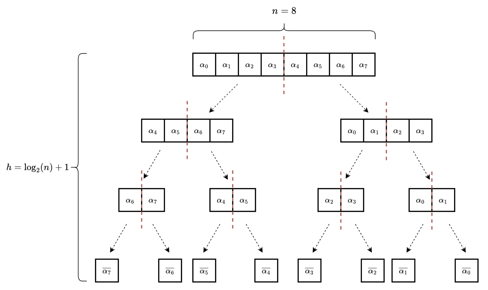
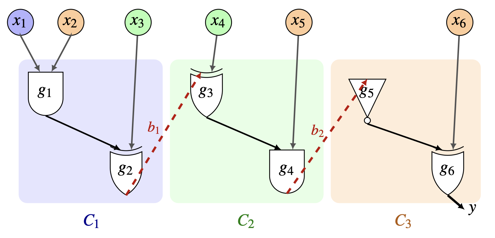

Research
My research focuses on cryptography and privacy, particularly secure multiparty computation (MPC). MPC enables multiple parties to jointly compute over their distributed private data while revealing nothing to any party beyond the expected output. The central technical challenge is to design such distributed protocols so that they remain secure against adversaries that corrupt and control some subset of the parties. I am interested both in the foundational questions underlying MPC and in its applications to other domains, including differential privacy and security of multi-agent systems. Below is a short sample of research directions that currently interest me.

Foundations of secure computation
What corruption thresholds and cryptographic assumptions are needed to achieve secure computation in specific adversarial settings (e.g., omission and active corruptions) or over restrictive communication models (e.g., incomplete or noisy networks)? Can we design (possibly efficient) compilers that transform MPC protocols from one setting into a stronger one (e.g., non-size-hiding MPC → size-hiding MPC; MPC over reliable channels → MPC over noisy channels)?

Making MPC practical
Can we design tools and techniques that reduce the computation, bandwidth, or round complexity of MPC for practically relevant functions? This often involves defining new cryptographic primitives, constructing them from efficient building blocks, and understanding their connections to existing primitives and protocols. I am particularly interested in optimizing two protocols, both in general and for specific applications: private set intersection (PSI), which lets parties learn the elements their sets have in common and nothing else, and private information retrieval (PIR), which lets a client retrieve an item from a server's database without revealing which item it queried.

Distributed differential privacy
Differential privacy (DP) is a powerful privacy tool that modifies the output of a computation so it reveals little about any individual's input data, typically by adding carefully calibrated noise. This creates a privacy–utility tradeoff: more noise yields stronger privacy but less accurate results. The tradeoff is well understood in the central model, where a single trusted party holds all the data and runs the DP mechanism. In many real-world settings, however, the data is spread across many users or organizations. In this distributed setting, achieving a good tradeoff is much harder, and in some cases it is provably impossible to match the accuracy of the central model. I am interested in using cryptography to close this gap, both to overcome information-theoretic lower bounds for distributed DP and to design efficient distributed DP mechanisms for functions of practical interest.